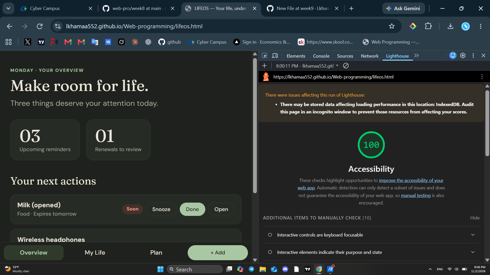

Accessibility Audit Report
Lighthouse Accessibility Score
1. How I tested
I opened our team page on my own GitHub Pages site and ran Lighthouse in Chrome DevTools (Lighthouse tab, Accessibility only, Desktop).
2. Result
The page scored 100 / 100, which is above the 85 target. Lighthouse did not find any failing automatic checks.
Lighthouse also shows 10 items to check manually, for example “Interactive controls are keyboard focusable”.
3. Manual keyboard check
I closed DevTools and moved through the page with the Tab key:
- The menu buttons (Overview, My Life, Plan, + Add) can be reached with Tab.
- On the My Life and Plan pages, the record rows (for example “Wireless headphones”) are skipped by Tab, because they are
<div>elements with a click handler, not real buttons. So a keyboard user cannot open them. - When a record window opens, the focus stays on the page behind it.
Lighthouse cannot find these problems automatically, which is why it asks for a manual check.
4. Lighthouse screenshot
Lighthouse Accessibility audit: 100 / 100 (URL visible in the address bar)

5. Conclusion
LifeOS gets a full Lighthouse score, but the manual keyboard check shows that some parts still need work. The next step is to change the clickable <div> rows into <button> elements and to move the focus into the record window when it opens.